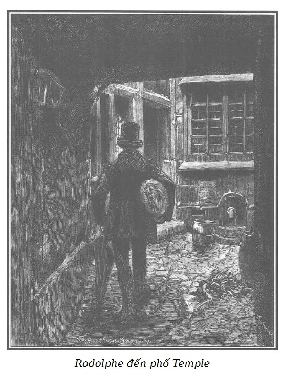
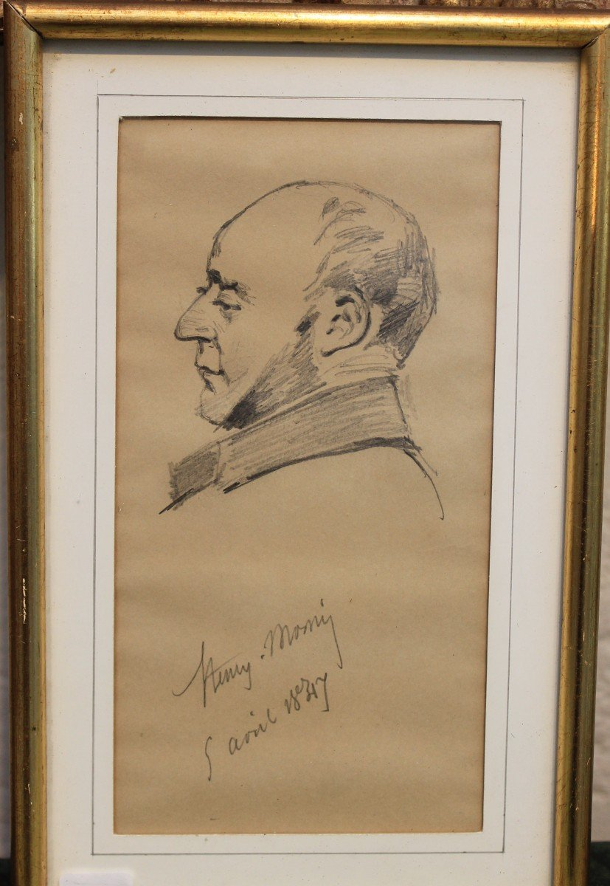

Để có thể sử dụng những tin tức mà Nam tước de Graün đã thu thập được về Marie và về François Germain, con trai của lão Thầy Đồ, Rodolphe phải đến phố Temple và đến nhà viên chưởng khế gặp Jacques Ferrand.
Đến nhà viên chưởng khế để cố thu thập được qua mụ Séraphin một vài dấu tích về gia đình Marie.
Đến căn nhà phố Temple, nơi mà gần đây François đã trú ngụ, để xem thử có thể qua cô Rigolette mà phát hiện nơi ẩn náu của chàng trai này, công việc khá gay go vì chỉ cô thợ khâu đầm trẻ tuổi đỏm dáng này mới có thể biết rõ con trai của Thầy Đồ cần phải trốn kĩ ở đâu và giấu kín nơi ở mới.
Thuê phòng trong căn hộ ở phố Temple, nơi trước kia François Germain đã ở, Rodolphe sẽ có điều kiện dễ dàng để dò xét, đồng thời lại còn tự mình quan sát được cặn kẽ các hạng người khác nhau ở đấy.
Ngay trong ngày Nam tước de Graün và ông Murph nói chuyện thân mật với nhau, vào lúc ba giờ một buổi chiều mùa đông ảm đạm, Rodolphe đến phố Temple.
Ở giữa một khu phố buôn bán đông đúc, căn nhà ấy không có dáng vẻ gì đặc biệt bên ngoài, bao gồm một tầng trệt, có quán rượu và bốn tầng gác; bên trên cùng có gác xép sát mái.
Một lối đi âm u, chật hẹp dẫn đến một khoảnh sân nhỏ, hay nói đúng hơn là một cái giếng vuông, bốn bề tường cao, mỗi bề rộng khoảng hai mét, hoàn toàn thiếu không khí và ánh sáng, nơi chứa đựng mọi thứ rác rưởi bẩn thỉu từ các tầng gác trên đổ xuống, từ các ô cửa không kính mở ra bên trên mỗi thềm nghỉ bọc chì.
Ở chân cầu thang ướt át, đen sì, nơi có ánh sáng đỏ quạch là buồng của người gác cổng, ám khói vì đèn thắp suốt ngày đêm soi tỏ cái hang tối tăm ấy; Rodolphe ăn mặc như một nhân viên chào hàng, đi vào đấy.

.Ông mặc một chiếc áo khoác không rõ màu gì, đội một cái mũ méo mó, đeo cà vạt đỏ, cầm ô, chân mang guốc có khớp. Để giả trang cho hợp với vai của mình, Rodolphe còn ôm trong tay một cuộn vải bọc rất kĩ nữa.
Ông vào nhà người gác cổng để hỏi về gian phòng trống cho thuê. Một chiếc đèn có bầu dầu cao, đặt sau một bình thủy tinh hình cầu đầy nước để phản chiếu ánh sáng soi tỏ gian buồng. Cuối phòng, một chiếc giường trải khăn chần bông sặc sỡ, do nhiều mụn vải khác màu, khác loại can lại với nhau; bên trái là một chiếc tủ bằng gỗ hồ đào đặt trên nền đá hoa để trang trí.
Một tượng thánh Jean sáp nặn với con cừu trắng và mớ tóc giả hoe vàng đặt trong một lồng kính rạn hình sao nẹp lại khéo léo bằng giấy xanh. Hai cây đèn nến mạ vàng cũ, đỏ quạch vì lâu đời và thay vì cắm nến thì lại để những quả cam bằng trang kim chắc vừa mới đây người ta tặng bà gác cổng làm quà năm mới.
Hai chiếc hộp, một chiếc bằng rơm tết nhiều màu khác nhau; chiếc kia khảm vỏ trai sò nhỏ; cả hai đều bốc mùi trại giam hoặc nhà tù khổ sai từ xa một dặm.hai chiếc hộp bốc mùi trại giam nhà tù khổ sai, từ xa một dặm đã ngửi thấy.
Vì tư cách của người gác cổng nhà ở phố Temple, mong rằng món quà đó không phải là của những người sản xuất ra chúng kính tặng!
Sau hết, giữa hai chiếc hộp và dưới một cái vòm pha lê bày một đôi ủng bé tí xíu bằng da Maroc đỏ, những đôi ủng cho búp bê thực sự, đóng, thêu và đục lỗ rất cẩn thận, khéo léo.
Kiệt tác ấy – những người thợ thủ công ngày trước vẫn nói như vậy – cùng với một mùi da thuộc hôi khét và vô số giày cũ treo tường theo những đường ngoạn mục chứng tỏ khá rõ rằng ông gác cổng nhà này đã từng đóng giày mới, bây giờ hết thời mới chuyển sang sửa chữa phục hồi giày cũ.
Khi Rodolphe mạo hiểm bước vào gian nhà lụp xụp ấy, ông Pipelet gác cổng đi vắng, bà vợ gác thay. Bà này ngồi gần một lò sưởi bằng gang đặt giữa nhà, đang mải trông một chiếc nồi sôi lục bục.
Họa sĩ đại tài người Pháp, Henry Monnier* đã khắc họa tài tình mẫu hình bà gác cổng nên chúng tôi đành phải lưu ý quý vị độc giả rằng, nếu muốn hình dung ra bà Pipelet thì hãy nhớ đến người xấu mã nhất, nhăn nhúm nhất, mũi nhiều mụn cơm nhất, ăn mặc nhếch nhác nhất, hay càu nhàu, cà khịa nhất, ác miệng nhất trong số những bà gác cổng đã được họa sĩ làm cho lưu danh muôn thuở.

.Henry-Bonaventure Monnier (1799-1877): Biên kịch, diễn viên kiêm họa sĩ biếm họa người Pháp.
Nét độc nhất có thể thêm thắt vào khiến hình mẫu lý tưởng ấy là một nét thật tuyệt vời, một kiểu đầu tóc kỳ cục, một mớ tóc giả kiểu Titus*, hoàng đế La Mã, mớ tóc giả ấy xưa có màu hoe vàng, nay do thời gian đã biến màu thành một tập hợp đủ vẻ, cả hung hung, cả vàng, cả nâu, cả vàng hung tô điểm cho một mớ lộn xộn rối rắm tưởng không thể nào gỡ nổi những túm tóc trời sinh, bất trị, cứng đờ, lởm chởm, rối tung. Bà Pipelet chẳng bao giờ rời bỏ món trang trí độc nhất và thường xuyên ấy trên cái đầu sáu mươi tuổi của mình.
Thời trang của những kiểu tóc ngắn này được khởi xướng bởi một diễn viên đóng vai Hoàng đế Titus. Kiểu tóc này ngắn và xoăn, chiều dài ở phía trước và phía sau bằng nhau, giống như mái tóc của Hoàng đế Titus trên những bức tượng cổ.
Thấy Rodolphe, bằng một giọng kiêu kỳ, ngạo mạn, bà gác cổng nói:
– Này ông kia! Đi đâu đó?
– Thưa bà, có phải ở đây có một phòng và một buồng cho thuê không ạ? – Rodolphe hỏi, nhấn mạnh tiếng “thưa bà”, để lấy lòng bà gác cổng.
Bà này đã bớt chanh chua:
– Có một phòng cho thuê ở gác tư nhưng không thể vào thăm được, ông Alfred không có nhà!
– Cậu cả phải không, thưa bà? Thế cậu ấy sắp về chưa ạ?
– Không phải đâu, ông ạ! Đó không phải là tên con tôi mà là tên ông nhà tôi đấy… Tại sao ông Pipelet lại không được gọi là Alfred nhỉ?
– Được lắm, thưa bà! Nhưng, nếu bà cho phép, tôi sẽ đợi đến lúc ông ấy về. Tôi rất muốn thuê gian phòng ấy. Khu này, phố này rất hợp với tôi; nhà này khiến tôi thích vì có người coi sóc chu đáo thế này. Tuy vậy, trước khi thăm gian phòng mà tôi rất muốn thuê, tôi mong bà cho biết, nếu thấy có thể được, bà giúp tôi việc nội trợ. Tôi có thói quen muốn nhờ những bà quản gia nếu các vị ấy bằng lòng giúp.
Lời đề nghị ấy với lối xưng hô lấy lòng “bà quản gia” đã chinh phục bà Pipelet hoàn toàn.
– Chắc được thôi, thưa ông, tôi sẽ giúp ông việc nội trợ. Tôi rất được hân hạnh với sáu franc một tháng, ông sẽ được phục vụ như một ông hoàng!
– Tôi đồng ý sáu franc đấy! Thưa… tên bà là…
– Pomone-Fortunée-Anastasie Pipelet.
– Vậy thì, thưa bà Pipelet, tôi bằng lòng trả giá sáu franc một tháng tiền công. Và nếu gian phòng ấy hợp với tôi, thì giá thuê bao nhiêu cơ?
– Cả buồng trong là một trăm năm mươi franc, thưa ông. Không kém một xu! Người chủ bao thuê vốn là tay đại bợm, rán sành ra mỡvặt trụi cả lông quả trứng.
– Thưa, tên ông ta là…
– Cánh Tay Đỏ!
Cái tên và những kỷ niệm cũ gợi lại khiến Rodolphe rùng mình.
– Bà nói, thưa bà Pipelet, người bao thuê là…
– Là ông Cánh Tay Đỏ.
– Ông ta ở…
– Phố Hàng Đậu, nhà số 13, ông ta còn mở một quán rượu bình dân ở rãnh hào đường Champs-Élysées nữa!
Không còn hồ nghi gì nữa, đúng là con người ấy. Sự gặp gỡ ngẫu nhiên này có vẻ kỳ lạ đối với Rodolphe.
– Nếu ông Cánh Tay Đỏ là người bao thuê, thì ai là người chủ của cái nhà này?
– Ông Bourdon, nhưng tôi chỉ cần làm việc với ông Cánh Tay Đỏ là được.
Muốn để bà gác cổng yên tâm, tin tưởng, Rodolphe nói tiếp:
– Này, bà Pipelet, tôi hơi mệt, lạnh quá, cóng cả người, bà làm ơn giúp tôi xuống hàng bán rượu ở nhà dưới đem lên cho tôi một chai rượu lý chua đen và hai cái cốc, à ba cái thì đúng hơn, vì ông nhà cũng sắp về.
Ông đưa cho bà này một trăm xu.
– Ái chà, thưa ông, ông muốn ngay từ đầu người ta đã mến phục ông! – Cái mũi đầy mụn dường như ửng lên vì thèm rượu.
– Phải đấy, bà Pipelet ạ! Tôi cũng muốn người ta mến lắm.
– Đúng như tôi nghĩ, đúng quá! Nhưng tôi chỉ mang lên hai cái cốc thôi đấy, tôi và Alfred nhà tôi bao giờ cũng uống chung một cốc. Chẳng là ông chồng tội nghiệp của tôi vốn chuộng tất cả những thứ gì dành cho phụ nữ.
– Vậy thì, bà Pipelet ạ, chúng ta sẽ đợi ông Alfred.
– Chà chà! Nếu có ai đến thì… ông trông giúp nhà tôi nhé!
– Bà cứ yên trí.
Bà Pipelet đi ra, còn lại một mình, Rodolphe nghĩ đến hoàn cảnh kỳ lạ khiến ông gặp lại Cánh Tay Đỏ! Ông chỉ ngạc nhiên vì sao François Germain lại có thể ở được ba tháng trong cái nhà này trước khi bị đồng lõa của Thầy Đồ phát hiện.
Đúng lúc đó, một người đưa thư gõ vào tấm cửa kính gian buồng, đoạn thò cánh tay vào, đưa ra hai lá thư và nói:
– Ba xu!
– Sáu xu chứ! Vì có những hai lá thư kia mà!
– Một cái đã dán tem rồi.
Sau khi trả tiền, Rodolphe liếc qua hai lá thư vừa đưa, nhưng ngay sau đó, ông cảm thấy có cái gì đó hay hay, đáng quan sát kĩ hơn.
Một lá thư gửi cho bà Pipelet, tỏa ra ngoài phong bì giấy láng một mùi hương xạ nồng nặc. Trên dấu xi đỏ, người ta thấy 2 chữ C. R. in hoa, bên trên có hình cái mũ chiến dựa vào một linh vật và ngôi sao huân chương Bắc đẩu bội tinh; địa chỉ trên phong bì viết bằng nét chữ gân guốc. Sự khoe khoang về dòng dõi qua cái mũ chiến và huân chương khiến Rodolphe cười mỉm, tin chắc rằng lá thư ấy không phải do phụ nữ viết.
Nhưng ai là người xức hương xạ, chưng gia huy mà lại trao đổi thư từ với bà Pipelet kia được?
Còn lá thư thứ hai thì viết trên giấy phong bì màu xanh bình thường, dán bằng xi lỗ chỗ vết châm kim, gửi cho ông César Bradamanti làm nghề chữa răng.
Đương nhiên có sự khuất tất vì địa chỉ được viết bằng toàn chữ in hoa. Do linh tính hay là thực tế như vậy mà lá thư ấy khiến Rodolphe có cảm giác rằng nó báo trước một việc không ra gì. Ông quan sát thấy có những chỗ dập xóa và một góc giấy hơi nhăn.
Nước mắt đã rỏ xuống đấy.
Bà Pipelet quay về với chai rượu lý chua đen và hai cái cốc:
– Tôi lề mề quá, phải không ông? Với lại đã vào quầy hàng của bố Joseph, thì đố ai có thể ra ngay được. Chà! Cái lão quỷ ám! Ông không thể tin là lão lại tán hươu tán vượn với tôi, một bà lão già được không?
– Chà! Nếu mà ông Alfred biết!
– Thôi, xin ông đừng nói nữa, chỉ mới nghĩ đến thôi mà đã chóng cả mặt, ông Alfred là chúa hay ghen bóng ghen gió; tuy thế nhưng mà đối với bố Joseph thì chỉ là chuyện đùa thôi, nói thật đấy!
– Có hai lá thư đưa tới đây này!
– Chà! Chúa tôi! Ông tha lỗi nhé! Thế ông đã trả tiền rồi à?
– Rồi!
– Ông tốt quá! Tôi sẽ bù lại khi trả tiền thừa. Hết bao nhiêu kia ạ?
– Ba xu! – Rodolphe mỉm cười trước kiểu trả lại tiền thừa kỳ lạ của bà Pipelet.
– Sao lại ba xu? Sáu xu chứ, vì có những hai lá thư kia mà!
– Tôi có thể lạm dụng lòng tin của bà để bà phải cộng thêm sáu xu vào khi trả lại cho tôi sáu xu tiền ứng chứ không phải ba xu. Nhưng tôi chịu không thể làm như thế được, bà Pipelet ạ! Một trong hai lá thư gửi cho bà đã dán tem rồi. Và không sợ là mang tiếng quá tò mò, tôi xin mạn phép bà mà nhận xét là bà đã trao đổi thư từ với một người có những lá thư tỏ tình mới thơm đến khiếp chứ!
– Xem nào! – Bà gác cổng cầm lấy chiếc phong bì giấy láng. – Của đáng tội đúng như là thư tỏ tình ấy! Ái chà! Ủa! Cái thằng mãnh nào lại dám…
– Nếu có ông Alfred lúc này thì, bà Pipelet ơi!
– Xin đừng nói như vậy kẻo tôi lại ngất đi bây giờ!
– Tôi không nói nữa đâu, bà Pipelet ạ!
– Ô mà này! Rõ khổ thân tôi! Chà, ngu quá! Tôi nhớ ra rồi, – bà gác cổng vừa nói vừa nhún vai – tôi biết rồi, biết rồi… của ông chỉ huy ấy mà! Ái chà, thế mà làm tôi hoảng quá. Tuy thế, tôi vẫn tính tiền được! Này, ba xu lá thư kia, phải không? Thế là với mười lăm xu rượu lý chua đen và ba xu cho lá thư cộng vào nữa vị chi là mười tám xu. Với bốn franc thì là vừa đúng một trăm xu nhé! Có sòng phẳng thì đi lại mới bền!
– Và đây là hai mươi xu biếu bà, bà Pipelet ạ! Bà có cái cách bù lại tiền người ta ứng trước cho bà huyền diệu quá, làm tôi không thể không khen được.
– Hai mươi xu à! Ông cho tôi những hai mươi xu à! Tại sao lại thế? – Bà Pipelet vừa e ngại vừa ngạc nhiên trước sự hào phóng khác thường ấy.
– Đó là tiền phong bao ứng trước, nếu tôi thuê được gian buồng ấy.
– Nếu thế thì tôi mới nhận, nhưng tôi sẽ cho ông Alfred biết.
– Tất nhiên phải thế thôi! Còn đây là lá thư khác gửi ông César Bradamanti.
– À, phải rồi… người làm nghề chữa răng ở tầng ba. Tôi sẽ đem bỏ vào cái “bốt” đựng thư*.
Tác giả muốn gây cười. Lẽ ra phải nói là cái thùng thư (boîte aux lettres), thì bà Pipelet lại nói trại là cái “bốt” đựng thư (botte, cái ủng), nghe na ná như nhau. Buồn cười vì sau đây, quả là có cái bốt đựng thư thật.
Rodolphe tưởng rằng mình nghe nhầm nhưng ông lại thấy quả là bà Pipelet trịnh trọng bỏ lá thư vào trong một cái ủng cũ, lộn gấu, treo ở tường.
Rodolphe ngạc nhiên:
– Ô hay! Sao bà lại bỏ lá thư vào đấy…
– Thưa ông, thế đấy! Tôi bỏ lá thư này vào trong cái bốt bỏ thư… như thế không thể thất lạc được, khi những người thuê nhà về, Alfred hoặc tôi, chúng tôi lắc cái bốt lọc ra, và thư ai, nấy nhận.
– Căn hộ của bà ngăn nắp tuyệt quá! Tôi thấy vậy lại càng muốn được ở đây, nhất là cái bốt thư này, nó làm tôi rất mê!
– Lạy Chúa! – Bà Pipelet khiêm tốn nói. – Có gì đâu, đơn giản thôi mà! Ông Alfred có một chiếc ủng cũ lẻ bộ, đem nó phục vụ cho những người thuê nhà là đúng nhất. – Bà ta bóc thư, xoay ngang, xoay dọc đủ chiều, lúng túng một lúc lâu, bà bảo với Rodolphe.
– Bao giờ ông nhà tôi cũng đọc thư vì tôi không biết chữ. Vậy ông có thể làm ơn đọc giúp tôi được không?
Rodolphe rất tò mò muốn biết người trao đổi thư với bà Pipelet là người như thế nào nên bảo:
– Tôi sẵn sàng giúp thôi.
Ông đọc những dòng sau đây, viết trên giấy láng, ở góc tờ giấy vẫn lại thấy có cái mũ chiến, hai chữ C. R., linh vật, gia huy và huân chương danh dự.
Ngày mai, thứ Sáu, vào lúc mười một giờ, đốt lò sưởi ở cả hai phòng, lau giường cẩn thận, và lột vải bọc ở mọi chỗ, chú ý đừng làm sây sát những lớp mạ vàng ở bàn ghế đồ đạc khi phủi bụi.
Nếu thảng hoặc tôi chưa tới mà có một phu nhân đến vào khoảng một giờ trưa, hỏi tôi dưới cái tên ông Charles thì đưa lên phòng rồi cầm chìa khóa xuống nhà để giao lại cho tôi khi tôi về.
Mặc dù lá thư viết không văn vẻ cho lắm, Rodolphe hiểu ngay đó là chuyện gì và ông bảo bà gác cổng:
– Người nào ở gác một thế nhỉ?
Bà lão đưa ngón tay nhăn nheo, vàng vọt lên cái môi thưỡi và láu lỉnh cười khẩy:
– Suỵt! Chuyện tằng tịu thầm vụng với phụ nữ ấy mà!
– Tôi hỏi điều đó, bà Pipelet thân mến ạ, vì trước khi đến nơi nào đó… thì ai người ta cũng muốn biết…
– Thường tình thôi! Hãy nói đi, “anh ruồng bỏ ai, tôi sẽ cho anh biết là ai thích anh”, có phải không nào?
– Tôi sắp nói ra điều ấy với bà đấy!
– Vả chăng, tôi cũng có thể nói cho ông hay những gì tôi biết về việc ấy, cũng không lâu hoặc dài dòng gì đâu… Cách đây khoảng sáu tuần, một người trang trí màn trướng đã đến đây xem xét tầng một, lúc đó chưa có khách thuê, hỏi giá, và ngày hôm sau trở lại với một gã trai, trẻ, đẹp, tóc hoe vàng, râu con kiến, đeo huân chương, quần áo sang trọng. Người thợ trang trí gọi gã là chỉ huy.
– Vậy người đó là quân nhân à?
– Quân nhân! – Bà Pipelet nhún vai. – Úi chà! Cũng như là ông nhà tôi tự xưng là bảo vệ ấy mà!
– Sao vậy?
– Gã chỉ là dân quân thuộc Vệ binh Quốc gia, người trang trí gọi tâng gã là chỉ huy để nịnh thôi… Cũng chẳng khác gì ông lão nhà tôi thích được gọi là ông bảo vệ ấy! Sau đó, chúng tôi chỉ biết gã dưới cái tên gọi ấy mà thôi, ông chỉ huy đã đi quan sát hết mọi chỗ, gã nói người thợ: “Tốt đấy! Hợp ý tôi đấy! Hãy thu xếp đi, đến mà gặp ông chủ.” “Thưa chỉ huy, rõ!” Người thợ đáp. Và ngày hôm sau nữa, người này đã đứng tên ký giấy thuê nhà với ông Cánh Tay Đỏ, ứng trước sáu tháng tiền thuê nhà; vì gã trẻ tuổi đó muốn giữ kín không cho ai biết. Ngay sau đó thợ thuyền đã đến phá hủy hết gác một, họ đã đem tới những trường kỷ bọc da, những rèm cửa bằng lụa, những tấm gương mạ vàng, những đồ đạc tuyệt đẹp, đẹp chẳng khác gì trong những quán cà phê ở Đại lộ. Đó là chưa kể thảm trải khắp nơi, rõ dày, rõ êm đến nỗi người ta có cảm tưởng như giẫm lên những con thú ấy! Khi công việc xong xuôi, tay chỉ huy quay lại để kiểm tra và bảo với ông Alfred: “Ông có thể coi sóc căn phòng này được không? Tôi không hay đến luôn đâu, chỉ thỉnh thoảng mới phải đốt lò sưởi và chuẩn bị mọi sự để đón tiếp tôi, lúc nào thì tôi sẽ viết thư cho ông qua trạm bưu điện nhỏ.” Cái đồ xu nịnh, ông lão nhà tôi xun xoe: “Thưa ngài chỉ huy, được ạ!” “Thế ông lấy bao nhiêu?” “Hai mươi franc một tháng thưa ngài!” “Hai mươi franc? Úi chà! Ông gác cổng, ông đùa đấy chứ?” Và thế là gã công tử đẹp trai ấy mặc cả như một thằng keo kiệt, lừa người nghèo khổ lấy tiền. Ông xem, mặc cả vài đồng một trăm xu khốn khổ, trong khi lại tiêu phí bao nhiêu là tiền cho một căn phòng nhỏ mà chẳng hề ở! Cuối cùng cò kè mãi chúng tôi mới đòi được mười hai franc. Mười hai franc! Ông xem, cũng phải đổ mồ hôi chứ! Cái đồ chỉ huy hai xu! Phì! Khác xa ông! – Bà gác cổng nhìn Rodolphe hể hả. – Ông không bắt người ta gọi tâng ông là chỉ huy, ông không làm bộ làm tịch gì hết, vậy mà ông đã hợp đồng ngay với tôi sáu franc ngay từ đầu…
– Từ đấy gã trai trẻ có quay lại nữa không?
– Rồi ông sẽ biết! Đây mới là điều buồn cười nhất. Hình như là người ta bỏ bùa mê thuốc lú cho tay ấy khiếp lắm! Gã đã viết thư báo cho tôi ba lần, cũng như hôm nay ấy, ra lệnh nhóm lò mới, thu xếp mọi thứ, vì sẽ có một phu nhân đến. Ái chà! Được! Thử xem có ai đến không?
– Không ai đến chắc?
– Ông nghe đây này! Lần đầu thì tay chỉ huy ấy đến, bảnh chọe, hát ư ử trong mồm, làm bộ làm điệu; đợi mất những hai giờ kia. Chẳng thấy ai đến. Khi gã quay trở ra, qua buồng gác, cả hai vợ chồng chúng tôi rình xem bộ dạng gã ra sao và sẽ trêu chọc cho gã thêm bực. Tôi mới nói: “Thưa ông chỉ huy! Chẳng thấy ai đến cả, ngay cả bà phu nhân hỏi ông cũng không thấy.” “Được thôi, được thôi!” Gã đáp vẻ ngượng nghịu và vội vã ra đi, vừa đi vừa gặm móng tay, bực bội. Lần thứ hai, trước khi gã đến thì có một người làm thuê đem một lá thư nhỏ gửi cho ông Charles. Tôi nghĩ chuyến này rồi cũng phèo thôi. Chúng tôi tha hồ mà cười. Khi tay chỉ huy đến: “Trình ngài chỉ huy!” Tôi vừa nói vừa đưa tay trái lên mớ tóc giả như là một nữ dân quân chính cống ấy: “Ngài có một lá thư, khéo hôm nay lại xôi hỏng bỏng không mất.có một cuộc hành quân ngược lại chăng?” Gã nhìn tôi, oai vệ như ông đại tướng. Mở lá thư đọc, mặt đỏ bừng lên như con tôm luộc rồi nói với chúng tôi, làm như không có gì phật ý: “Tôi biết là người ta sẽ không đến rồi mà. Tôi lại đây hôm nay để dặn ông bà coi sóc nhà cửa cho kĩ càng thôi!” Chẳng đúng đâu! Chỉ vì muốn giấu chúng tôi, chúng tôi là người khiến gã mất công mà gã nói như thế! Và thế là gã uốn éo ra đi và lại hát lầu bầu trong miệng. Gã bực mới gớm chứ! Đáng kiếp! Thật đáng kiếp cho đồ Thiếu tá hai xu! Bài học đấy, ai bảo chỉ trả mười hai franc một tháng mà bắt người ta phải hầu!
– Thế còn lần thứ ba thì sao?
– Ái chà! Lần này thì tôi đã tưởng ăn chắc! Tay chỉ huy tới trong bộ quần áo đẹp nhất, mắt long sòng sọc, ra điều hài lòng và tin chắc là thắng lợi. Dù sao thì cũng trẻ và đẹp trai đấy chứ! Ăn mặc rõ sang và thơm nức mũi, như một con cầy hương. Tưởng như là chân không dính đất nữa vì bốc lên thế kia mà! Lấy chìa khóa và nói với chúng tôi, vừa giễu cợt vừa vênh váo, như là đền bù lại những lần trước: “Ông bà sẽ báo cho vị phu nhân biết là cửa vào buồng kế bên nhé!” Được thôi, vợ chồng Pipelet chúng tôi cũng tò mò muốn xem bà phu nhân nhỏ nhắn ấy mặt mũi ra làm sao, tuy rằng chúng tôi không tin cho lắm, cho nên chúng tôi ra ngoài thềm, rình ở lối đi. Lần đó, một cỗ xe ngựa nhỏ màu xanh, buông rèm kín, đến đỗ trước cửa.
“Được, đúng bà ấy rồi! Tôi nói vậy với ông lão: Ta rút êm đi để bà ấy khỏi ngượng.” Người đánh xe mở cửa. Thế là tôi thấy một phu nhân với khăn ủ tay bằng len đặt trên lòng, một mạng voan đen che mặt và một chiếc mùi soa che miệng vì bà ta dường như muốn khóc, thế nhưng khi bậc lên xuống vừa hạ, thì đáng lẽ xuống xe, bà ta đã ra lệnh gì đó cho người đánh xe, người này ngạc nhiên, đóng cửa xe lại.
– Bà ấy không xuống xe à?
– Không! Bà ta ngồi tụt mãi vào trong phía tận cùng và lấy tay che mặt. Tôi lao ra, và trước khi người đánh xe trèo lên chỗ ngồi, tôi lại hỏi: “Về mãi đâu kia?” “Từ chỗ ấy đấy.” “Thế thì từ đâu đến?” “Từ phố Saint-Dominique, góc phố Belle-Chasse.”
Nghe vậy, Rodolphe giật mình.
Hầu tước d’Harville, một trong những người bạn tốt nhất của ông, bị một nỗi u buồn tê tái giày vò trong suốt thời gian gần đây, như chúng tôi đã kể, vốn có nhà ở phố Saint-Dominique, tại góc phố Belle-Chasse.
Như thế có phải là Hầu tước phu nhân d’Harville sắp sa ngã chăng? Ông chồng nàng nghi ngờ về hạnh kiểm hư đốn của nàng chăng? Có thể coi đó là nguyên nhân duy nhất gây ra nỗi buồn xé ruột ấy được không?
Những điều nghi ngại ấy dồn dập trong đầu óc Rodolphe. Tuy nhiên, ông cũng biết rằng trong giới đi lại thân mật với Hầu tước phu nhân mà ông nhớ được, không thấy có ai giống như tay chỉ huy ấy. Người thiếu phụ nói đến, có thể đã thuê một cỗ xe ở phố ấy nhưng không ở đó, không có gì chứng tỏ cho Rodolphe biết đó là bà Hầu tước. Tuy thế, ông vẫn có những điều nghi ngờ vô căn cứ và nặng hề.
Vẻ lo ngại và bộ dạng mải mê suy nghĩ ấy không thoát khỏi con mắt bà gác cổng.
– Thế nào, thưa ông, ông nghĩ gì vậy?
– Tôi đang tự hỏi vì sao người thiếu phụ ấy đã đến tận cửa rồi mà còn đột nhiên thay đổi ý kiến?
– Làm thế nào được, thưa ông! Có thể vì một ý nghĩ, nỗi e ngại, một điều tin nhảm. Phụ nữ chúng tôi thường yếu đuối, hay hoảng sợ như vậy. – Bà gác cổng đáo để nói với một giọng rụt rè. – Tôi tưởng rằng nếu giả sử tôi lén lút làm gì giấu ông lão nhà tôi thì không biết tôi phải tặc lưỡi đến bao nhiêu lần mới quyết định được. Nhưng không bao giờ, chẳng bao giờ như vậy cả, ông thân mến, không có ai trên trái đất này có thể tự hào…
– Tôi tin bà đấy, nhưng còn thiếu phụ đó thì…
– Tôi không rõ bà ta còn trẻ không, ngay đến cái sống mũi cũng chẳng thấy nữa là! Dù sao cũng vẫn là, khi đến cũng như khi đi, không kèn không trống! Có cho vợ chồng chúng tôi mười franc thì chúng tôi cũng không thích bằng.
– Tại sao thế?
– Vì nghĩ đến bộ mặt của tay chỉ huy sau đó thì buồn cười đến vỡ bụng mất. Trước hết, lẽ ra nên báo cho gã biết ngay là bà phu nhân đã đi mất rồi, nhưng chúng tôi cứ để cho gã mơ màng, lẩm bẩm cho chán đã. Lúc ấy tôi mới lên gác. Tôi chỉ đi dép vải nhẹ đến cửa sát bên. Tôi đẩy cửa, cửa kêu cót két; cầu thang tối như hũ nút, hành lang đi vào phòng cũng thế. Lúc tôi vừa vào thì tay chỉ huy ôm choàng lấy tôi và dịu dàng mơn trớn. “Chao ôi! Thượng đế của anh! Thiên thần của anh! Nàng đến chậm quá đấy!”
Mặc dù đang bận tâm suy nghĩ những việc hệ trọng, Rodolphe không khỏi phì cười, nhất là lại thấy cái đầu tóc giả ngộ nghĩnh, bộ mặt nhăn nhúm đầy mụn dễ sợ của nữ nhân vật này trong màn “bé cái nhầm” lố lăng ấy.
Bà Pipelet lại càng nhăn nhở, khiến bộ mặt bà ta càng xấu thêm, tiếp tục:
– Này này! Rõ là một trò đùa đến nơi đến chốn nhé! Ông sẽ còn thấy! Tôi không nói gì, nín hơi thở, ngả người vào tay gã, nhưng bỗng nhiên gã quát to, đẩy tôi ra, cái đồ thô bạo, như thể gã vừa vớ phải một con nhện ấy: “Ô kìa, cái của quái quỷ nào thế này?”
“Thưa ông chỉ huy, tôi đây ạ, tôi là bà gác cổng Pipelet đấy ạ, vì vậy tôi yêu cầu ngài đừng có mà ôm tôi, đừng có mà táy máy tay chân, mà cũng đừng gọi tôi là thiên thần cũng như đừng trách tôi đến muộn như thế! Nếu mà ông Alfred nhà tôi biết thì làm thế nào!” Gã nổi nóng: “Thế bà muốn cái gì?” “Thưa ông chỉ huy, bà phu nhân nhỏ bé vừa đi xe đến.” “Thế thì bà đưa bà ta lên đây, sao mà ngu thế! Ta đã chẳng dặn thế sao?” Tôi cứ để mặc gã, để mặc: “Thưa ngài chỉ huy, đúng là ngài có dặn như vậy.” “Thế thì sao?” “Nhưng mà phu nhân bé nhỏ…” “Nói ngay đi!” “Nhưng mà phu nhân bé nhỏ đã quay về mất rồi ạ.” “Này, chắc là mụ lại nói bậy hoặc đã làm điều gì vớ vẩn đấy thôi!” Gã quát lên càng to và càng tức thêm. “Không ạ, thưa ngài chỉ huy, bà phu nhân không hề bước xuống xe. Khi người đánh xe mở cửa, bà ta đã cho xe quay lại chỗ xuất phát. Xe chắc chưa đi xa.” Gã lao ra cửa. “À, thưa ngài, bà ta đã đi được hơn một giờ rồi ạ!” “Một giờ, một giờ à? Tại sao các người lại cho ta biết muộn như thế?” Gã giận run lên. “Úi chà! Vì chúng tôi sợ khiến ông phiền lòng nhiều quá, vì đã quá tam ba bận rồi mà vẫn chưa bõ côngcho ông hòa vốn.” Nói thế nhưng tôi lại nhủ thầm: Này, mắc hợm rồi, chàng công tử bột ơi! Mày được bài học đáng đời khi mày đụng đến bà! “Thôi, cút ra đi, chỉ được cái làm bậy và nói vớ vẩn.” Gã giận dữ quát, lột cái áo choàng kẻ ô vuông ra, rồi lại quẳng cả cái mũ Hy Lạp bằng nhung thêu kim tuyến xuống đất nữa. Dù sao cái mũ cũng rõ thật là đẹp. Và cả cái áo choàng nữa! Của đáng tội, tay chỉ huy này trông cứ y như con đom đóm ấy!
– Thế từ bấy đến nay, cả anh cả ả không thấy quay lại nữa sao?
– Không! Nhưng ta hãy đợi xem câu chuyện kết thúc thế nào!